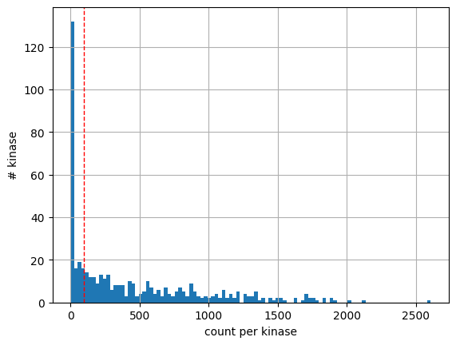

from matplotlib import pyplot as plt
import pandas as pd
import numpy as np
import seaborn as sns
from scipy.stats import spearmanr, pearsonrPrepare kinase-substrate dataset
Large scale dataset
# large_scale data
LS= pd.read_excel('raw/large_scale_final2.xlsx')
LS['gene_site'] = LS['S_position']
LS = LS[['Kinase','gene_site','substrate']]
LS_info = pd.read_csv('raw/LS_info.csv')
LS = LS.merge(LS_info).drop(columns = ['count'])PhosphoSitePlus dataset
KS = pd.read_csv('raw/Kinase_Substrate_Dataset_final.csv')
# only keep human kinase substrate pairs
KS = KS.query('KIN_ORGANISM=="human"')
# remove the substrate that does not have sty in the middle
KS = KS[KS.substrate.str[7].isin(['s','t','y'])].reset_index(drop=True)
KS['gene_site'] = KS.SUB_GENE.str.upper() + "_"+KS.SUB_MOD_RSD
KS = KS[['Kinase','gene_site','substrate','kinase_uniprot','kinase_paper']]Combine
KS['source'] = 'pplus'
LS['source'] = 'large_scale'df = pd.concat([KS,LS]).reset_index(drop=True)df| Kinase | gene_site | substrate | kinase_uniprot | kinase_paper | source | |
|---|---|---|---|---|---|---|
| 0 | DYRK2 | GLI2_S385 | AEGLRPAsPLGLTQE | Q92630 | DYRK2 | pplus |
| 1 | DYRK2 | SIAH2_S68 | GGGAGPVsPQHHELT | Q92630 | DYRK2 | pplus |
| 2 | DYRK2 | CARHSP1_S41 | LRGNVVPsPLPtRRt | Q92630 | DYRK2 | pplus |
| 3 | DYRK2 | DCX_S306 | GPMRRSKsPADSANG | Q92630 | DYRK2 | pplus |
| 4 | DYRK2 | CDC25A_S283 | PErsQEEsPPGSTKr | Q92630 | DYRK2 | pplus |
| ... | ... | ... | ... | ... | ... | ... |
| 216464 | SPHK1 | HERC2_S2928 | AAVPFLAsDNEEEED | Q9NYA1 | NaN | large_scale |
| 216465 | SPHK1 | PARG_Y832 | DALHFRRyLDQFVPE | Q9NYA1 | NaN | large_scale |
| 216466 | SPHK1 | G6PI_T109 | ALRNRsNtPILVDGK | Q9NYA1 | NaN | large_scale |
| 216467 | PRPK | TITIN_S20761 | DAERKSWsTVTTECs | Q96S44 | PRPK | large_scale |
| 216468 | PRPK | TITIN_S20768 | sTVTTECsKTSFRVA | Q96S44 | PRPK | large_scale |
216469 rows × 6 columns
# kinase without mapping
df.loc[df.kinase_paper.isna()].Kinase.value_counts()Kinase
LYNb 1694
ABL1[T315I] 1320
ABL1[E255K] 1274
RET[M918T] 1221
FGFR3[K650M] 1220
...
GRP78 1
TAO3 1
PIK3CD 1
PIK3CB 1
G11 1
Name: count, Length: 80, dtype: int64df.substrate.str[7].value_counts()substrate
y 109225
s 74830
t 32414
Name: count, dtype: int64df.source.value_counts()source
large_scale 198248
pplus 18221
Name: count, dtype: int64len(df)216469df['substrate'] = df['substrate'].\
str.replace('r', 'R').\
str.replace('k', 'K').\
str.replace('n', 'N').\
str.replace('d', 'D').\
str.replace('h', 'H').\
str.replace('c', 'C').\
str.replace('X', '_').\
str.replace('p', 'P').\
str.replace('a', 'A').\
str.replace('v', 'V').\
str.replace('g', 'G').\
str.replace('m', 'M').\
str.replace('l', 'L').\
str.replace('q', 'Q').\
str.replace('f', 'F')Split phosphosite sequence to single amino acid
df| Kinase | gene_site | substrate | kinase_uniprot | kinase_paper | source | |
|---|---|---|---|---|---|---|
| 0 | DYRK2 | GLI2_S385 | AEGLRPAsPLGLTQE | Q92630 | DYRK2 | pplus |
| 1 | DYRK2 | SIAH2_S68 | GGGAGPVsPQHHELT | Q92630 | DYRK2 | pplus |
| 2 | DYRK2 | CARHSP1_S41 | LRGNVVPsPLPtRRt | Q92630 | DYRK2 | pplus |
| 3 | DYRK2 | DCX_S306 | GPMRRSKsPADSANG | Q92630 | DYRK2 | pplus |
| 4 | DYRK2 | CDC25A_S283 | PERsQEEsPPGSTKR | Q92630 | DYRK2 | pplus |
| ... | ... | ... | ... | ... | ... | ... |
| 216464 | SPHK1 | HERC2_S2928 | AAVPFLAsDNEEEED | Q9NYA1 | NaN | large_scale |
| 216465 | SPHK1 | PARG_Y832 | DALHFRRyLDQFVPE | Q9NYA1 | NaN | large_scale |
| 216466 | SPHK1 | G6PI_T109 | ALRNRsNtPILVDGK | Q9NYA1 | NaN | large_scale |
| 216467 | PRPK | TITIN_S20761 | DAERKSWsTVTTECs | Q96S44 | PRPK | large_scale |
| 216468 | PRPK | TITIN_S20768 | sTVTTECsKTSFRVA | Q96S44 | PRPK | large_scale |
216469 rows × 6 columns
Split site sequence to individual columns
# Split the 'SITE_+/-7_AA' column into individual letters
split_cols = df['substrate'].apply(list).apply(pd.Series).fillna('_')
# Rename the new columns from -7 to 7
split_cols.columns = range(-7, 8)
# Concatenate the original dataframe with the split columns
df = pd.concat([df, split_cols], axis=1)df| Kinase | gene_site | substrate | kinase_uniprot | kinase_paper | source | -7 | -6 | -5 | -4 | ... | -2 | -1 | 0 | 1 | 2 | 3 | 4 | 5 | 6 | 7 | |
|---|---|---|---|---|---|---|---|---|---|---|---|---|---|---|---|---|---|---|---|---|---|
| 0 | DYRK2 | GLI2_S385 | AEGLRPAsPLGLTQE | Q92630 | DYRK2 | pplus | A | E | G | L | ... | P | A | s | P | L | G | L | T | Q | E |
| 1 | DYRK2 | SIAH2_S68 | GGGAGPVsPQHHELT | Q92630 | DYRK2 | pplus | G | G | G | A | ... | P | V | s | P | Q | H | H | E | L | T |
| 2 | DYRK2 | CARHSP1_S41 | LRGNVVPsPLPtRRt | Q92630 | DYRK2 | pplus | L | R | G | N | ... | V | P | s | P | L | P | t | R | R | t |
| 3 | DYRK2 | DCX_S306 | GPMRRSKsPADSANG | Q92630 | DYRK2 | pplus | G | P | M | R | ... | S | K | s | P | A | D | S | A | N | G |
| 4 | DYRK2 | CDC25A_S283 | PERsQEEsPPGSTKR | Q92630 | DYRK2 | pplus | P | E | R | s | ... | E | E | s | P | P | G | S | T | K | R |
| ... | ... | ... | ... | ... | ... | ... | ... | ... | ... | ... | ... | ... | ... | ... | ... | ... | ... | ... | ... | ... | ... |
| 216464 | SPHK1 | HERC2_S2928 | AAVPFLAsDNEEEED | Q9NYA1 | NaN | large_scale | A | A | V | P | ... | L | A | s | D | N | E | E | E | E | D |
| 216465 | SPHK1 | PARG_Y832 | DALHFRRyLDQFVPE | Q9NYA1 | NaN | large_scale | D | A | L | H | ... | R | R | y | L | D | Q | F | V | P | E |
| 216466 | SPHK1 | G6PI_T109 | ALRNRsNtPILVDGK | Q9NYA1 | NaN | large_scale | A | L | R | N | ... | s | N | t | P | I | L | V | D | G | K |
| 216467 | PRPK | TITIN_S20761 | DAERKSWsTVTTECs | Q96S44 | PRPK | large_scale | D | A | E | R | ... | S | W | s | T | V | T | T | E | C | s |
| 216468 | PRPK | TITIN_S20768 | sTVTTECsKTSFRVA | Q96S44 | PRPK | large_scale | s | T | V | T | ... | E | C | s | K | T | S | F | R | V | A |
216469 rows × 21 columns
Add extra columns
df['kinase'] = df['kinase_paper'].fillna(df['Kinase'])
df['on_tree']=df['kinase_paper'].notna().astype(int)Save
Uncheck below
df.columns = df.columns.astype(str) # Parquet can only save df with string column name
df.to_parquet('raw/df.parquet')Load data
Need to convert the number in the columns to integer type
df = pd.read_parquet('raw/df.parquet')
#Convert the number in the column name into integer
df.columns = [int(col) if col.lstrip('-').isdigit() else col for col in df.columns]Visualize counts
df.kinase.value_counts().hist(bins=100)
plt.axvline(x=100, color='r', linestyle='--', linewidth=1)
plt.xlabel('count per kinase')
plt.ylabel('# kinase');
cnt = df.kinase.value_counts().reset_index()cnt.columns = ['kinase','count']cnt| kinase | count | |
|---|---|---|
| 0 | SRC | 2605 |
| 1 | EPHA3 | 2120 |
| 2 | FES | 2013 |
| 3 | NTRK3 | 1927 |
| 4 | ALK | 1889 |
| ... | ... | ... |
| 488 | CAMK1G | 1 |
| 489 | CAMK2D iso8 | 1 |
| 490 | PHKA1 | 1 |
| 491 | VPRBP | 1 |
| 492 | NEK10 | 1 |
493 rows × 2 columns